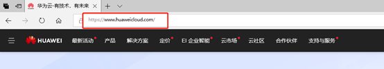

NSD CLOUD DAY04
1 案例1：注册华为云用户
1.1 问题
本案例要求：
- 访问官网 https://huaweicloud.com/
- 注册华为云用户（需手机号验证）
- 登录并完成实名认证
- 为账号充值不少于100元（不用时可提现）
1.2 步骤
实现此案例需要按照如下步骤进行。
步骤一：注册华为云
1）访问官网，如图-1所示：

图-1
2）注册用户，如图-2所示：
图-2
2）登陆并完成实名认证，如图-3所示：
图-3
2 案例2：ECS选购及基本操作
2.1 问题
本案例要求：
- 选购一台ECS云服务器
- 按需付费、通用计算型1vCPUs/1GB、硬盘40GB
- 独享带宽按流量、镜像选CentOS 7.4 x64
- 用户 root，密码 tedu.cn1234
- 通过“远程登录”进入此ECS云服务器的系统
2.2 步骤
实现此案例需要按照如下步骤进行。
步骤一：选购云服务器
1）选购一台云服务器，如图-4所示：
图-4
2）结果如图-5所示
图-5
3）ECS基本操作，如图-6所示：

图-6
3 案例3：云服务器Web建站
3.1 问题
本案例要求：
- 在ECS云服务器上启用 httpd 服务
- 测试网页
3.2 步骤
实现此案例需要按照如下步骤进行。
步骤一：云服务器Web建站
1）在ECS云服务器上启用 httpd 服务
- [root@svr1 ~]# yum -y install httpd //安装httpd
- .. ..
- [root@svr1 ~]# systemctl restart httpd //启动服务
- [root@svr1 ~]# systemctl enable httpd //设开机自运行
- [root@svr1 ~]# systemctl status httpd //检查服务状态
- .. .. Active: active (running) .. .. //正在运行中
2）ECS实例需开放Web服务端口，如图-7所示：
备注：22端口：Linux服务器远程控制
80端口：普通网站服务
443端口：加密网站服务
图-7
2）测试页面，如图-8所示：
图-8